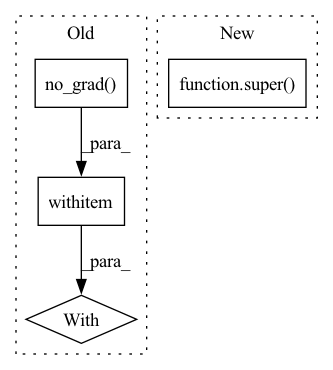

Pattern ID :1959

Before Change
def forward(self, **kwargs):
ft = self.freeze_finetune_updates <= self.num_updates
with torch.no_grad() if not ft else contextlib.ExitStack():
res = self.encoder(**kwargs)
x = res["x"]
padding_mask = res["padding_mask"]
After Change
return sample["label"].long()
def forward(self, **kwargs):
res = super().forward(**kwargs)
x = res["x"]
padding_mask = res["padding_mask"]
In pattern: SUPERPATTERN
Frequency: 3
Non-data size: 4
Instances
Fragment ID: 8754461
Project Name: jwoo5/fairseq-signals
Commit Name: 166a7eef2b0a55898e5f13b105c4ebbe977f5828
Time: 2021-10-22
Author: ojw0123@korea.ac.kr
File Name: fairseq_signals/models/identification/arcface.py
M Class Name: ArcFaceModel
N Class Name: ArcFaceModel
M Method Name: forward(1)
N Method Name: forward(1)
M Parent Class: ConvTransformerFinetuningModel
N Parent Class: ConvTransformerFinetuningModel
M File Name: fairseq_signals/models/identification/arcface.py
N File Name: fairseq_signals/models/identification/arcface.py
M Start Line: 54
M End Line: 62
N Start Line: 54
N End Line: 57
'>
Before Change
def test_torchscript_conversion(self, backbone_name):
model = BACKBONES.get(backbone_name)(pretrained=False).to(self.device).eval()
x = torch.rand(2, 3, *model.img_size, device=self.device)
with torch.no_grad():
torch.jit.trace(model, x)
torch.cuda.empty_cache()
After Change
@parameterized.expand(["swinv2_tiny_window16_256"])
def test_torchscript_conversion(self, backbone_name):
super().test_torchscript_conversion(backbone_name)
class TestBeit(AbstractTestBackboneCorrectness, unittest.TestCase):
'>
Fragment ID: 8754460
Project Name: eora-ai/torchok
Commit Name: e10a30df9d43bb62b3f7d8a7fd0cbf86df746624
Time: 2022-09-13
Author: rashit.bayazitov.1995@gmail.com
File Name: tests/additional_tests/models/backbones/test_backbone.py
M Class Name: TestSwin
N Class Name: TestSwin
M Method Name: test_torchscript_conversion(2)
N Method Name: test_torchscript_conversion(2)
M Parent Class: unittest.TestCase,AbstractTestBackboneCorrectness
N Parent Class: unittest.TestCase,AbstractTestBackboneCorrectness
M File Name: tests/additional_tests/models/backbones/test_backbone.py
N File Name: tests/additional_tests/models/backbones/test_backbone.py
M Start Line: 177
M End Line: 181
N Start Line: 182
N End Line: 182
'>
Before Change
def forward(self, **kwargs):
ft = self.freeze_finetune_updates <= self.num_updates
with torch.no_grad() if not ft else contextlib.ExitStack():
res = self.encoder(**kwargs)
x = res["x"]
padding_mask = res["padding_mask"]
After Change
return sample["label"].float()
def forward(self, **kwargs):
res = super().forward(**kwargs)
x = res["x"]
padding_mask = res["padding_mask"]
'>
Fragment ID: 8754459
Project Name: jwoo5/fairseq-signals
Commit Name: 166a7eef2b0a55898e5f13b105c4ebbe977f5828
Time: 2021-10-22
Author: ojw0123@korea.ac.kr
File Name: fairseq_signals/models/classification/linear_projection.py
M Class Name: LinearProjectionModel
N Class Name: LinearProjectionModel
M Method Name: forward(1)
N Method Name: forward(1)
M Parent Class: ConvTransformerFinetuningModel
N Parent Class: ConvTransformerFinetuningModel
M File Name: fairseq_signals/models/classification/linear_projection.py
N File Name: fairseq_signals/models/classification/linear_projection.py
M Start Line: 49
M End Line: 57
N Start Line: 49
N End Line: 52